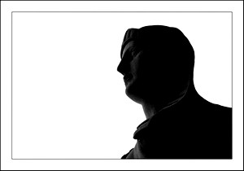

Esfinge del Borne
El Borne
Lo que actualmente se le conoce como el Borne se le llamaba el Paseo de la Princesa, ya que, durante el reinado de Isabel II, en 1833, empezaron las obras de remodelación que le dieron el aspecto actual, junto otras posteriores en 1863. Antes de existir el paseo por aquí discurría el lecho del torrente de la Riera y también paseaban barcos y alguna que otra barca. Tras desviar el torrente, el viejo canal se cubrió de tierra y surgieron casas y alguna mansión, aparte de ser lugar de torneos, justas y actos de fe durante siglos.